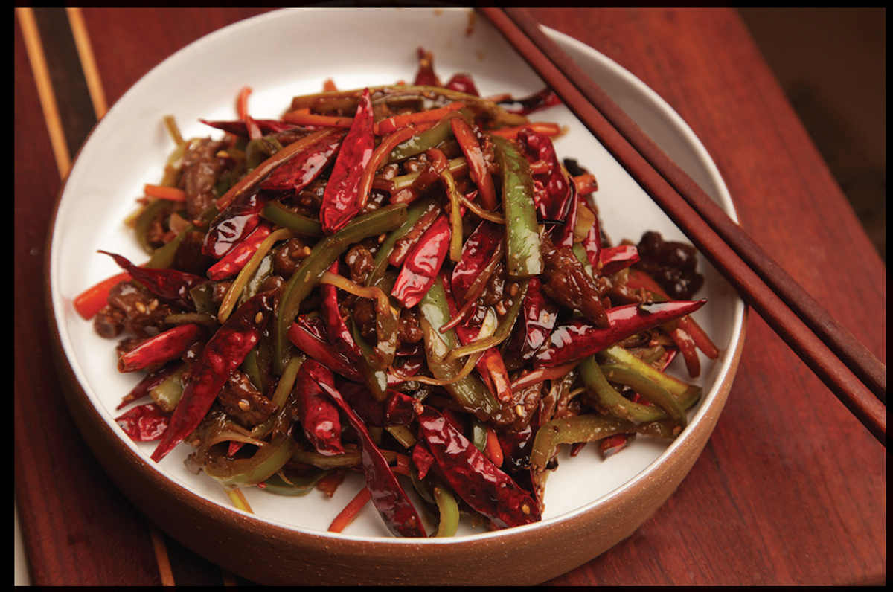

SHREDDED BEEF WITH HOT PEPPERS AND CHILES
|
Yield Serves 4 Active Time 15 minutes Total Time 30 minutes |
You can replace the carrot and leek with 7 to 8 ounces of any vegetable you can find that can be cut into thin matchsticks. Some good options are celery, bell pepper, sliced shiitake mushrooms, or potatoes soaked in cold water for 15 minutes. |
When I was a kid, ordering delivery from Hunan Balcony was like miniature Christmas. The plastic bags would be delivered with their tops tied shut in a bow, my mom would get dishes, and we would unload the stacks of expertly packed aluminum foil trays onto the dining room table. I remember them feeling unreasonably heavy for their size, like ripe fruit. We’d peel back the lids and the puff of steam that escaped would announce what was inside each one before we could even see it. Frequently that was a dish of their Shredded Beef with Four Flavors: slivers of beef stir-fried with slivered carrots, leeks, and hot peppers in a hot and vinegary sauce. At least that’s how I remembered it. When I asked my sister, she remembered it as a dish of sliced beef stir-fried and served on top of a pile of spinach. Who was right? Hunan Balcony has been closed for a number of years, so I turned to the Internet for some help.
It turns out that in the New York Public Library’s database of NYC menus, the dish makes only a single appearance, and it’s in a 1984 takeout menu from Hunan Balcony. We were both partially right: shredded beef stir-fried and served over a bed of stir-fried watercress. I’m not sure exactly what the four flavors were, as there are at least five listed on that menu: red pepper, watercress, scallion, garlic, and ginger. I’m not even certain what the origins of the dish are, though it bears a passing resemblance to what is called “Hunan beef” on Chinese American menus. According to the Chinese cooking website The Woks of Life, the authentic Hunan version of the dish is typically made with smoked, partially dried beef, which would give it a similar texture to Sichuan-style dry-fried beef (here), but with more fresh chile heat, rather than the fermented chile used in the Sichuan dish.
Whatever its source, I cook my own version of the dish these days, taking a Hunan approach with plenty of fresh chiles and fermented black beans in a relatively dry sauce. I love it because the technique of stir-frying several shredded ingredients together makes the dish easily adaptable to a host of vegetables. Hot peppers are a must (I like using Anaheim chiles or Chinese green cowhorn peppers), but beyond that, it works with slivered scallions, leeks, carrots, zucchini, bell peppers, shiitake mushrooms, bamboo shoot, celery, cucumber, or even potato. Just keep the basic ratio of meat to veggies the same and feel free to substitute as you or your fridge sees fit. You can serve it on top of briefly stir-fried watercress if you’d like, or just serve it with rice.
INGREDIENTS
For the Beef:
12 ounces (340 g) beef skirt, flank, hanger, or flap, cut into slivers (see here)
½ teaspoon (2 g) baking soda
½ teaspoon (1.5 g) kosher salt
1 teaspoon (5 ml) light soy sauce or shoyu
1 teaspoon (5 ml) dark soy sauce
1 teaspoon (5 ml) Shaoxing wine or dry sherry
½ teaspoon (2 g) sugar
½ teaspoon (1.5 g) cornstarch
For the Sauce:
1 tablespoon (15 ml) dark soy sauce
1 tablespoon (15 ml) light soy sauce
1 tablespoon (15 ml) distilled white vinegar
1 tablespoon (15 ml) Shaoxing wine
1 tablespoon (4 g) sugar
6 to 8 small red pickled chiles (homemade, here, or store-bought), finely minced, or 1 tablespoon (15 g) fermented chile sauce such as sambal oelek
Small pinch of MSG (optional)
For the Cornstarch Slurry:
1 teaspoon (6 g) cornstarch
1 tablespoon (15 ml) water
For the Stir-Fry:
3 tablespoons (45 ml) peanut, rice bran, or other neutral oil
2 long green chiles such as Chinese cowhorn or Anaheim, cut into 2-inch matchsticks (about 6 ounces/180 g)
1 small hot chile, such as Fresno, jalapeño, or serrano, cut into 2-inch matchsticks (about 1 ounce/30 g)
1 leek, white and pale green parts only, cut into 2-inch matchsticks (about 3 ounces/90 g)
1 medium carrot, peeled and cut into 2-inch matchsticks (about 4 ounces/120 g)
2 teaspoons (5 g) minced fresh garlic (about 2 medium cloves)
2 teaspoons (5 g) minced fresh ginger (about ½-inch segment)
2 tablespoons (about 12 g) dried fermented black beans (douchi), roughly chopped
24 to 30 small dried chiles such as er jing tiao or chao tian jiao
Toasted sesame seeds, for garnish
DIRECTIONS
1For the Beef: Place the beef in a medium bowl, cover with cold water, and vigorously agitate it. Drain through a fine-mesh strainer set in the sink and press on the beef with your hands to remove excess water. Return the beef to the bowl, add the baking soda, and vigorously massage the baking soda into the meat, lifting the meat, throwing it down, and squeezing it for 30 to 60 seconds. Add the salt, soy sauces, wine, sugar, and cornstarch, roughly work the marinade into the meat for at least 30 seconds, and set aside to marinate for at least 15 minutes and up to overnight.
2For the Sauce: Combine the soy sauces, vinegar, wine, sugar, pickled chiles or chile sauce, and MSG in a small bowl and stir together until homogenous. Set aside. Combine the cornstarch and water in a separate small bowl and stir with a fork until the cornstarch is dissolved.
3BEFORE YOU STIR-FRY, GET YOUR BOWLS READY:
4For the Stir-Fry: Heat a wok over high heat until lightly smoking. Add 1 tablespoon (15 ml) of the oil and swirl to coat. Add the beef and stir-fry until no longer red, about 1 minute. Transfer to a large bowl.
5Wipe out the wok and return it to high heat until lightly smoking. Add 1 tablespoon (15 ml) of the remaining oil and swirl to coat. Add the fresh chiles, leeks, and carrots and stir-fry until tender-crisp, about 1 minute. Transfer to the bowl with the beef.
6Wipe out the wok and return it to high heat until lightly smoking. Add the remaining tablespoon (15 ml) oil and swirl to coat. Add the garlic, ginger, black beans, and dried chiles and stir-fry until very fragrant, about 15 seconds. Return all the beef and toss until evenly mixed.
7Stir the sauce and add to the wok by pouring it around the edges. Stir the cornstarch slurry and add. Cook, tossing, until the sauce has nearly dried up, about 1 minute. Stir in a small handful of sesame seeds. Transfer to a serving platter, sprinkle with more sesame seeds, and serve immediately with steamed rice.
